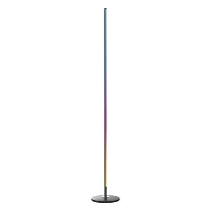
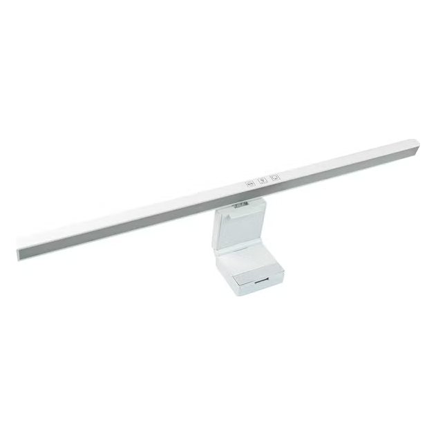
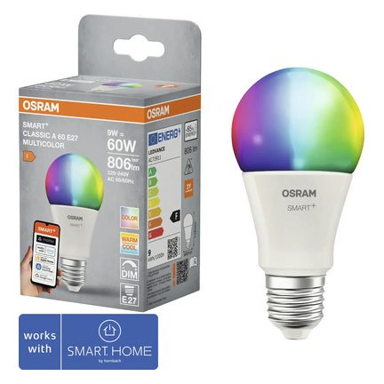
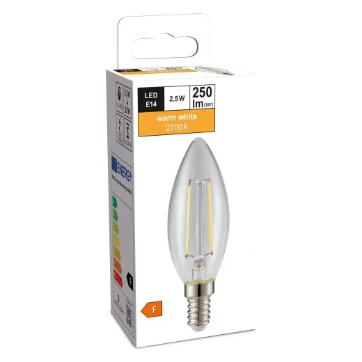
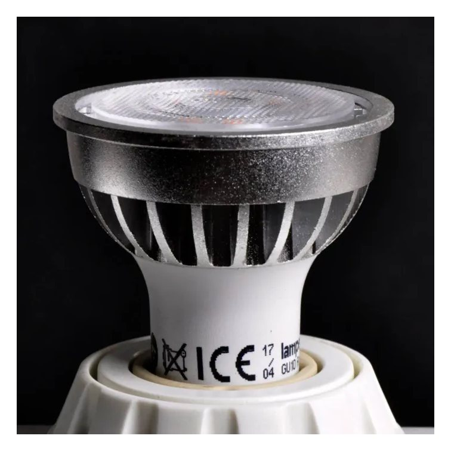
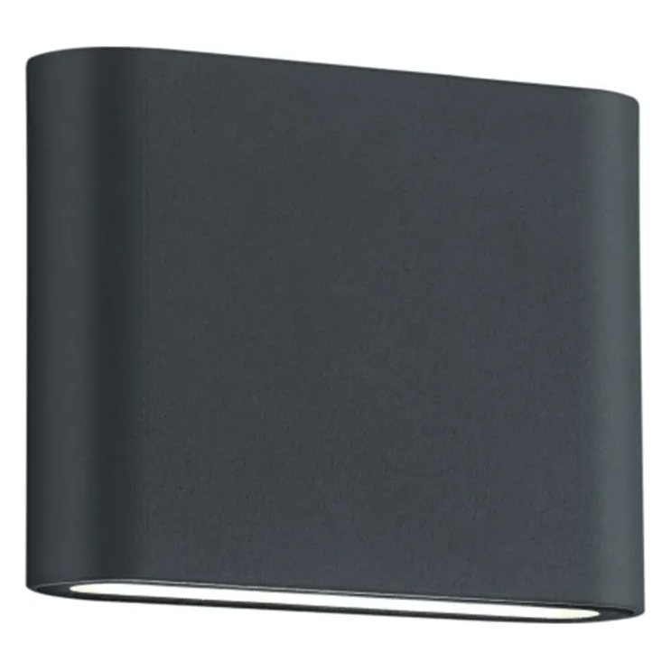

图片仅供参考，展示产品类型。
家居与智能照明
无线充电台灯，触控调光，铝制，2000 mAh，USB充电
无线铝制台灯，适用于露台、餐饮和床头，三档触控调光，暖白光，电池容量可选。
这款无线铝制台灯通过触控感应器实现三档亮度调节，并带30分钟自动关闭定时。严格的买家会关注经过验证的电池安全（UN 38.3、IEC 62133-2）、户外使用的防护等级、各档亮度的实测续航，以及做工精细、耐腐蚀的铝制灯体。
技术参数
| 材质 | 铝 |
|---|---|
| 光源 / 光色 | LED，2700 K暖白；三色温仅可应要求提供 |
| 操作 | 触控感应，3档亮度，30分钟自动定时 |
| 电池 | 锂电池，标配2000 mAh，可选5200 mAh |
| 充电 | USB；可选无线充电底座 |
| 高度 | S 20 cm、M 26 cm、L 35 cm |
| 海关编码（HS） | 94052190 |
欧盟标准与法规
GPSR (EU) 2023/988EN 60598-1, EN 60598-2-4, EN 62368-1便携式灯具安全作为技术水平依据；充电器/USB电源适用低电压指令2014/35/EUBatterien (EU) 2023/1542, BattG, IEC 62133-2, UN 38.3锂电池的安全、标识、回收和危险品运输测试EMV 2014/30/EU, EN IEC 55015, EN 61547照明设备的电磁骚扰与抗扰度（带无线充电底座时另适用RED + EN 303 417）EN 60529 (IP44)户外使用的防溅水和防异物防护等级，含充电口RoHS 2011/65/EU, REACH, ElektroG, VerpackG有害物质限制，在stiftung ear（WEEE）和LUCID包装登记处注册
搭配产品

本类别其他产品

RGBIC氛围落地灯 150厘米，App控制 （WiFi/蓝牙），带遥控与音乐同步

屏幕挂灯，非对称光学，色温可调，USB供电挂在显示器上沿的纤细USB灯条：非对称光学，全光谱LED（Ra > 95），五档色温3,000–7,150 K。

智能LED灯泡 E27，Matter over Wi-Fi，RGBTW （9 W, 800 lm）

RGBIC LED灯带 5米，App控制 （蓝牙）与音乐同步可单独寻址的RGBIC灯带，5米一卷，支持渐变色、蓝牙App、音乐同步与调光；Wi-Fi和语音控制需搭配相应控制器。

太阳能草坪路径灯 4只装，带地插，IP65，暖白四只ABS太阳能路径灯，带地插和光控，适用于步道与花坛，暖白光，可选IP65。

LED灯串 26米，360颗LED，室内外IP44，定时，8种模式市电供电的灯串，8种闪烁模式，适用于圣诞树、阳台和外墙；

超薄圆形LED吸顶灯，3000–6500 K 可调色温，可调光，带遥控器超薄圆形LED吸顶灯，可调光，通过2.4 GHz无线遥控器在暖白至日光白之间切换三档色温。

LED台灯，可调光，2700–6000 K 色温，触控操作，可折叠，带夹座可折叠LED夹式台灯，触控调光，提供2700至6000 K三档色温，适用于居家办公、学习和床头。

E14 LED 蜡烛灯泡 4 W 2700 K适用于吊灯和壁灯的经典 C37 蜡烛形灯泡。

GU10 LED 射灯灯泡 5 W 4000 K用于嵌入式射灯和导轨系统的标准射灯灯泡。

G9 LED 插脚灯泡 3 W替代卤素插脚灯的紧凑型 G9 灯泡。

铝制室内上下出光 LED 壁灯带上下出光的装饰壁灯。

12 W 圆形铝制 LED 嵌入式筒灯适用于吊顶的超薄嵌入式筒灯。

IP65 花园 LED 草坪柱灯适用于花园、车道和露台的低矮柱灯。